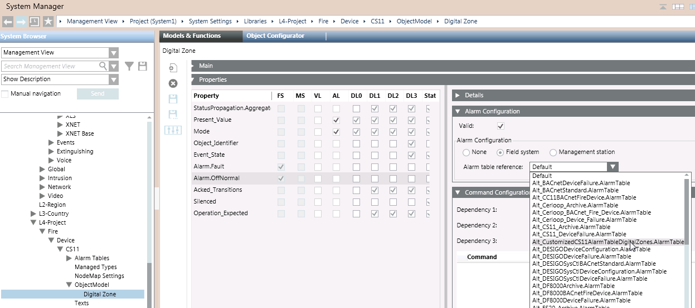

Apply a CS11 Customized Alarm Table
(Option 1) Apply the Modified Alarm Table to a Customized CS11 Object Model
Use this method to apply the modified alarm table to an object type. For example, the digital zones.
- In the Headquarter CS11 device library, select the CS11 object model to customize. For example:
- […] > Libraries > L1 Headquarter > Fire > Device > CS11 > Object Model > Digital Zone
- In the Models & Functions tab, click Customize
 .
.
NOTE: If the icon is dimmed it means that the selected object model is already customized. Skip to step 4. - A confirmation message box displays.
- Click OK.
- The customized object model is added to the customized library.
- Select the customized object model. For example [...] > Libraries > L4-Project > Fire > Device > CS11 > Object Model > Digital Zone.
- In the Models & Functions tab, open the Properties expander.
- In the list on the left, select the Property to which you want to associate the modified alarm table. This must be one for which the FS column is checked.
For example, Alarm.OffNormal. - The Details, Alarm Configuration and other expanders on the right update to show the settings of the selected property.
- In the Alarm Configuration expander, from the Alarm table reference drop-down list, select the customized alarm table that you want to use for this customized object model.
- Click Save
 .
. - Stop and then re-start the BACnet driver to enable the new table.
- The modified alarm table will apply to all the CS11 points that are based on the selected object model.

(Option 2) Apply the Modified Alarm Table to Individual CS11 Points
Use this method to modify the alarm table of a specific digital zone, rather than for all digital zones.
- Select the CS11 point for which you want to use the modified alarm table. For example Project > Field Network > [Fire BACnet] > [CS11] > [CC11] > [Logical] > […] > [digital zone].
NOTE: You can also use CTRL or SHIFT to make a multiple selection, for example of two or more digital zones to which you want to apply the same modified alarm table. - In the Object Configurator tab, open the Properties expander.
- In the list on the left, select the Property to which you want to associate the modified alarm table. This must be one corresponding to the selected object, for which the FS column is checked. For example, Alarm.OffNormal.
- The Details, Alarm Configuration and other expanders on the right update to show the settings of the selected property.
- In the Alarm Configuration expander:
a. Set the Valid field so it displays a gray (not blue) checkmark.
b. Leave the Alarm Configuration field to Field system.
c. From the Alarm table reference drop-down list, select the customized alarm table that you want to use for this object. - Click Save .
- Stop and then re-start the BACnet driver to enable the new table.
- The modified alarm table will apply to the selected CS11 points.